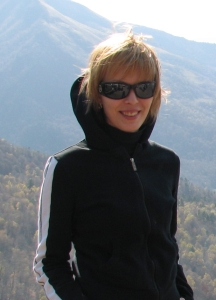
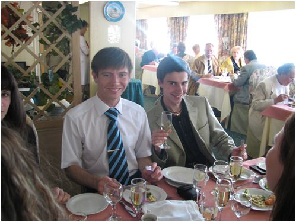

ФРАГМЕНТЫ ИЗ ОТЧЕТОВ О ПРОИЗВОДСТВЕННОЙ ПРАКТИКЕ НА РЕЧНОМ КРУИЗЕ ПО МАРШРУТУ МОСКВА – САНКТ-ПЕТЕРБУРГ - МОСКВА А. ГОЛЬДТШМИДТА И И. ПОЛЯКОВОЙ
Вот на этом красавце-теплоходе «Княжна Анастасия» и проходили производственную практику Антон и Ирина
Гольдшмидт А.П. окончил в 2006 г. ростовскую среднюю школу № 65 с серебряной медалью, в 2006 поступил в ЮФУ на специальность «Туризм». Участник многих научных студенческих конференций по проблемам международного туризма, а также конференций на английском языке. Организатор, режиссер, актер команды КВН геофака ЮФУ. Неоднократный лауреат фестивалей художественного творчества ЮФУ в номинациях «Лучший актер», «Лучший ведущий концерта».
Электронный адрес: smexmarket@mail.ru

Полякова И.В. Об Ирине Поляковой читайте в разделе «Заключения» дипломных работ
Кто может претендовать на место работы на круизном теплоходе (из опыта производственной практики А. Гольдшмидта и И. Поляковой)
1. Человек должен знать иностранные языки, чем больше, тем лучше. Как минимум - два.
2. Человек должен уметь быстро реагировать и уметь решать проблемы за самый короткий промежуток времени.
3. Человек должен уметь работать с людьми, знать их менталитет и основы психологии.
4. Человек должен обладать такими качествами как спокойствие, дружелюбность, приветливость, тактичность, расчётливость, толерантность, гибкость.
5. Человек должен уметь держать себя.
6. Человек должен уметь управлять работниками, иметь знания в области менеджмента, маркетинга и экономики в целом.
7. Человек должен быть юридически подкован, всегда быть готовым постоять за себя.
8. Человек никогда не должен паниковать и поддаваться эмоциям, всегда нужно контролировать и трезво оценивать ситуацию.
9. Человек должен обладать хорошим вкусом.
10. Человек должен уметь искренне улыбаться и быть готовым всегда и в любой ситуации помочь как туристу, так и другому работнику.
11. Человек должен быть готов к работе, практически, круглые сутки, иначе шанс добиться хорошего сервиса сводится к минимуму.
12. Человек должен быть очень внимательным во всём.
13. Человек должен быть ответственным, т.к. на нём лежит ответственность как за туристов, так и за персонал, материальная ответственность - в том числе.
14. Человек должен обладать отличными навыками работы с офисной техникой для достижения максимального положительного результата за наиболее короткий срок.
15. Человек должен быть разносторонне развит и иметь широкий кругозор.
16. Человек должен иметь знания не только в области языкознания, но также в области культуры, различных наук, искусств и многого другого.
17. Человек должен иметь обширные знания в особенности в сфере туризма, экскурсоведения, гостиничного и ресторанного бизнеса, анимационной деятельности, педагогики и т.п. То есть, понимать специфику работы всего туристского комплекса.
18. Человек должен обладать актёрским мастерством и богатым воображением.
На самом деле, это только часть того, что должен знать и уметь работник круизного теплохода. Для начала, этого вполне достаточно. Но не стоит забывать, совершенству нет предела!
Ирина: «Одно из моих рабочих мест. Здесь я хозяйка, принимающая гостей со всего света, и должна быть крайне заботливой и приветливой. Не со всеми иностранными туристами это легко сделать, но надо, постоянно напоминает капитан».

Антон: «Что главное на практике, спросите Вы меня? Главное, конечно же, правильно выбранное место основной своей дислокации».
«Интересно, где это мы сейчас находимся?»
«О, СЧАСТЬЕ! Наконец-то, фотографируемся с капитаном»
Чему мы научились, проходя практику на круизном теплоходе
Многие называют круизный теплоход школой жизни. По факту, теплоход является огромным туристским комплексом, но в уменьшенном масштабе. Поэтому практика на таком теплоходе по праву может считаться лучшей. В первую очередь, получается шикарная практика иностранного языка, т.к. идёт постоянная коммуникация с его носителями. Кроме того, также появляется возможность изучать и другие иностранные языки. В последнюю навигацию мне удалось освоить базу французского и итальянского языков.
При работе с людьми в закрытом пространстве появляется большое количество различных вопросов и проблем, которые постоянно нужно решать, будь то просьба принести гель для душа или неверная работа компьютерной системы. Так или иначе, эти проблемы нужно устранять. Поэтому, волей – неволей, вы научитесь решать проблемы различной степени сложности за очень короткий промежуток времени.
Раз уж мы заговорили о проблемах, следует коснуться и черт характера. «На теплоходе нет проблем, есть только нерешённые вопросы». Эта фраза является негласным гимном работников теплохода, которая призывает и даже заставляет быть решительным, не бояться и не волноваться при работе с гостями, уметь взять себя в руки и предоставить услуги наилучшего качества. Становиться гибкими и обходительными в нужный момент, уметь успокоить человека и сделать всё, чтобы он чувствовал себя как дома. Это дорого стоит. Как вы понимаете, возможность поработать над своим характером просто великолепна.
Работа на теплоходе даёт обширнейшие знания о работе туристских комплексов. Вы увидите на практике, как действует гостиничный комплекс, ресторанный, как организуются и проводятся экскурсии, узнаете все тонкости организации работы всех служб и как установить взаимосвязь между ними лучшим образом. И всё это возможно в одном месте и в одно время.
И, пожалуй, самое главное, это то, что работая на теплоходе, учишься приспосабливаться к любым условиям. Только на теплоходе старший администратор рецепции может сделать перевод выборного меню, потом пойти провести урок русского танца для французов, немцев и итальянцев, одновременно, а потом вернуться в офис и начать делать общую сводную программу для персонала на русском языке.
Вам это покажется глупым? Или комичным? Или нерациональным? А на самом деле, это вполне нормально. Это значит, что вы приспособились к условиям работы на теплоходе. Это значит, что ваша практика точно прошла успешно и вы стали ближе к гордому званию
«Специалист по международному туризму».